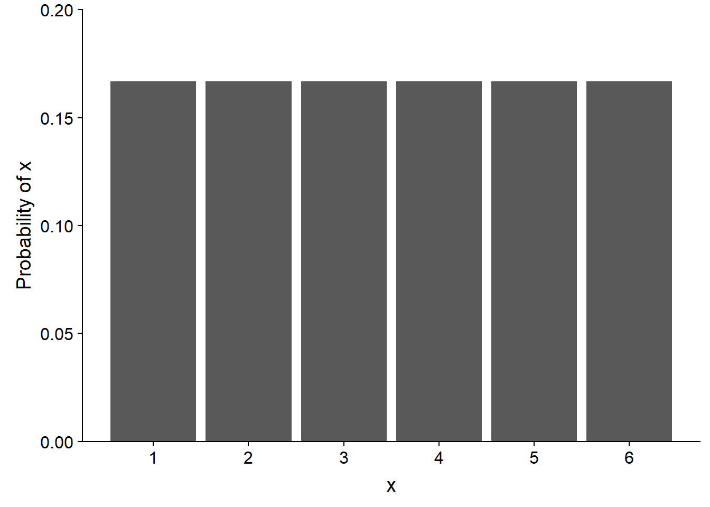
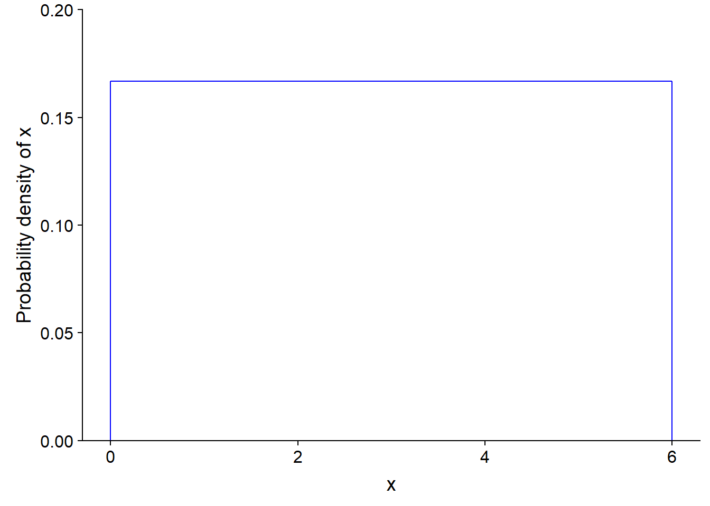
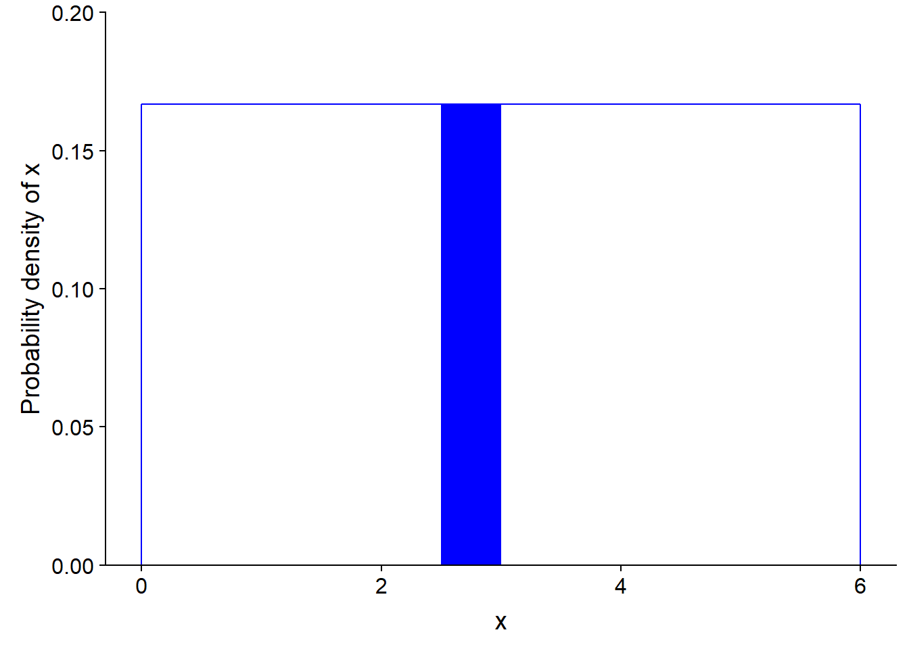
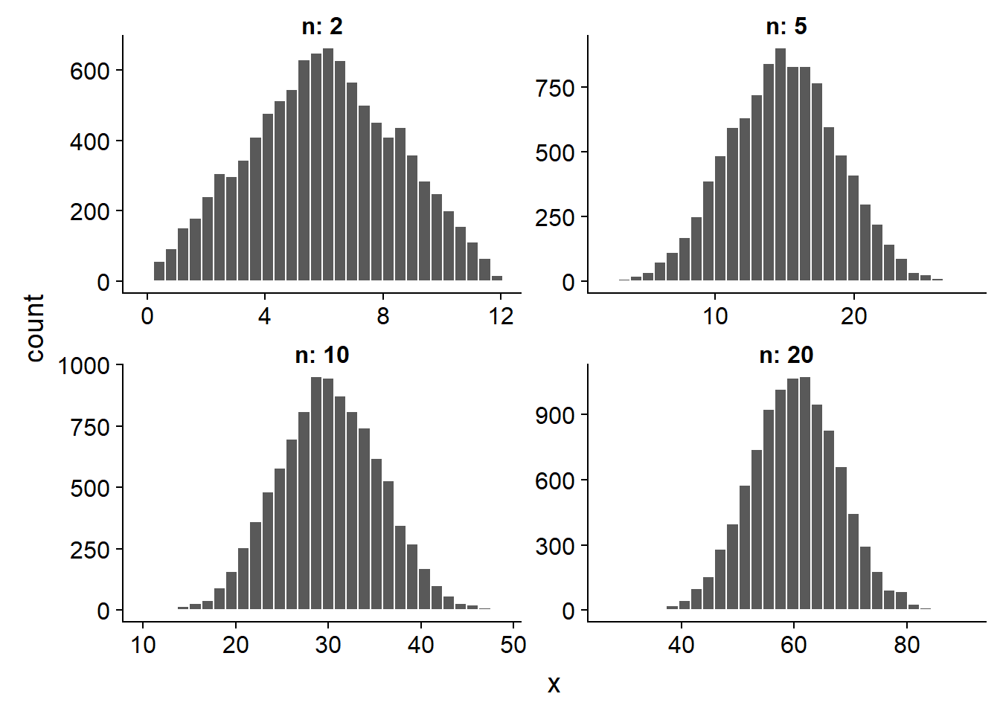
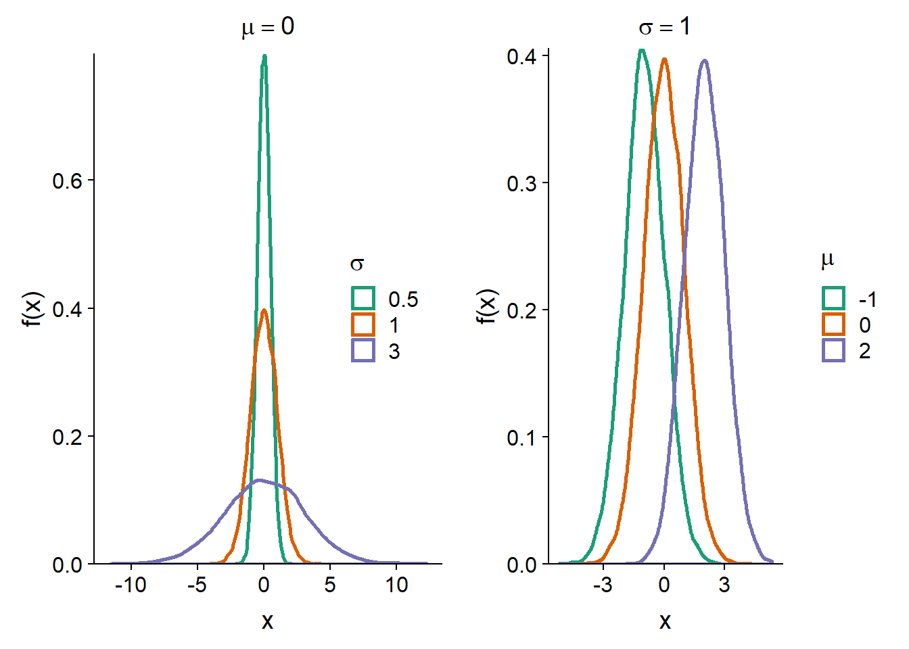
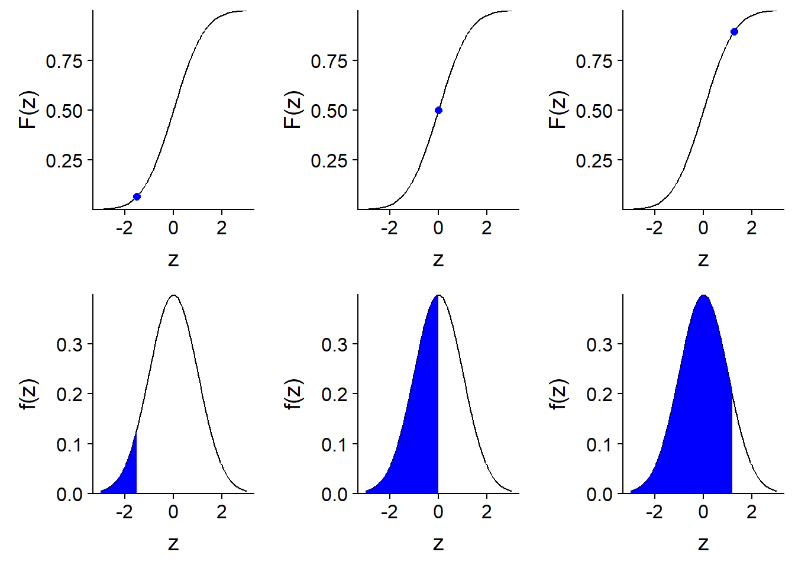
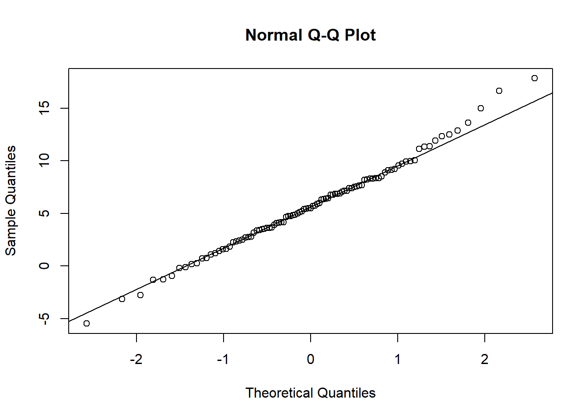
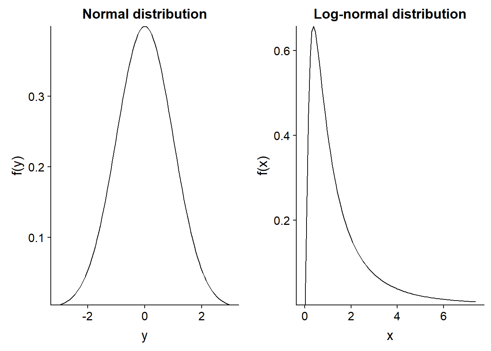
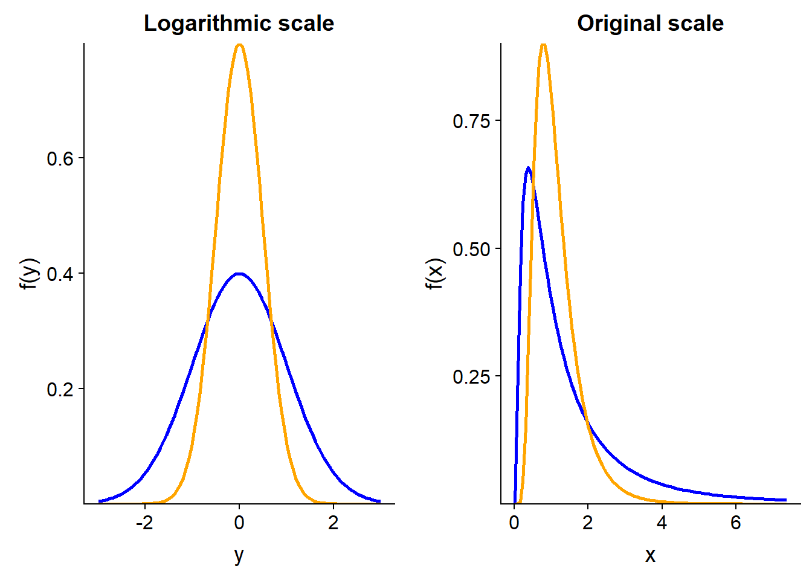
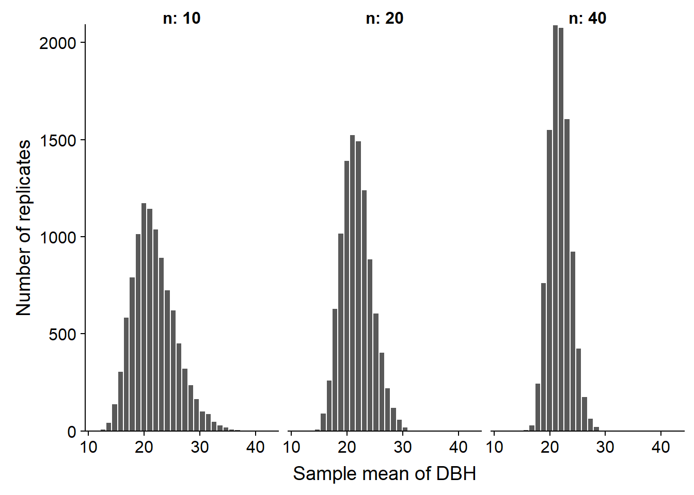

Statistical models, parameters and estimators
Sept. 4, 2018
Objectives
Statistical distributions
- Describe the characteristics and use of normal and log-normal distributions.
- Know the relationship between probability density and cumulative probability for a continuous variable, and calculate these quantities in R.
- Compare data to a reference distribution with a quantile-quantile plot.
Parameter estimation
- Estimate the mean and variance of a population from a sample.
- Define the bias and standard error of an estimator.
- Calculate the properties of an estimator by simulation.
- Interpret a confidence interval and calculate the confidence interval for the mean of a normal distribution.
Statistics, parameters and estimators
At the last class, we saw a series of descriptive statistics: mean, variances, quantiles and others. In general, a statistic is a quantity calculated from observations of random variables.
In this class, we will consider the observations as the result of a random process described by a statistical model including some parameters. Our main goal will be to determine to what extent a statistic computed from the observations constitutes a good estimator of the desired parameter.
For example, if we measure the weight of red squirrels and average these measurements (a statistic), what is our estimate of the average weight of the red squirrel population (a parameter)? What is its margin of error?
In general, a parameter is a theoretical quantity. In our example, even if we could imagine a census of all the squirrels, the weight of the individuals varies constantly and the composition of the population too (because of the births, deaths and migrations).
At the end of the course, we will be able to describe the bias, variance and confidence interval of an estimator. Before we get there, we will first review the basic mathematical concepts for describing statistical models, as well as a particularly important model, the normal distribution.
Probability distributions
A distribution is a function that associates a probability with each possible value of a random variable.
Discrete distribution
When the variable is discrete, each value has a probability mass, the sum of which must be equal to 1. For example, if \(x\) is the number obtained by rolling a balanced six-sided die, the probability of \(x\) is 1/6 for each of the numbers from 1 to 6. Since the probability is the same for each value, this would be a uniform distribution.

Continuous Distribution
When the variable is continuous, the number of possible values is infinite, so the probability of precisely obtaining a given value is zero. The distribution function therefore associates a density of probability with a given value.
For example, here is a uniform probability distribution between 0 and 6. The probability density is constant (1/6) in the interval and zero outside.

For a continuous distribution, the probability that the variable is within a given interval is the integral (the area under the curve) of the probability density in that interval.
Here, the probability density is rectangular, so it is easy to calculate the probability of an interval. For example, the probability of getting a value between 2.5 and 3 is 1/2 (width of the interval) x 1/6 (probability density) = 1/12 (~ 0.083). This value corresponds to the area of the filled rectangle in the graph below.

The integral of the probability density over the set of values of \(x\) (total probability) must be equal to 1.
The normal distribution
Motivation
In R, the following command generates one value (n = 1) from the uniform distribution between 0 and 6.
x <- runif(n = 1, min = 0, max = 6)
x## [1] 4.89407A quantity computed from random variables is itself a random variable. Suppose, then, that we are interested in the sum of several draws from this uniform distribution. We create a function that generates \(n\) values of the distribution and calculates their sum. We then generate 10,000 values of this sum (with replicate) for a given value of \(n\).
# Sum of n random variables with a uniform distribution between min and max
sum_unif <- function(n, min, max) {
sum(runif(n, min, max))
}
n <- 10
x <- replicate(10000, sum_unif(n, 0, 6))Here is a histogram of the values of the sum for different values of \(n\). What do you notice?

The sum of 2 values has a triangular distribution, but starting from \(n\) = 5, we see the bell shape of a normal distribution.
Law of large numbers
In the example, we used a simulation to illustrate the distribution of random variables obtained by summing 2, 5, 10 and 20 values of a uniform random variable between 0 and 6. Each of these four variables (sum of 2, 5, 10 and 20) has a certain theoretical distribution, which we do not know. However, by simulating the process that generates this variable a large number of times (here, 10,000), we obtain a virtual sample whose empirical distribution (histogram) is close to the theoretical distribution.
Thus, the larger the size of a random sample, the larger the distribution of values in that sample approaches the distribution of the variable in the population. This is called the law of large numbers.
The law of large numbers explains why our simulated sample offers a good approximation of the theoretical distribution of each sum. The fact that this theoretical distribution approaches a normal distribution when the number of variables in the sum increases is another important principle in statistics, the central limit theorem.
Central limit theorem
The central limit theorem stipulates that when we sum a large number of independent random variables, regardless of the distribution of individual variables, the distribution of their sum approximates a normal distribution.
To be strict, some technical conditions should be included about the variables that are summed, but the simplified definition above is sufficient for this course.
This property of the normal distribution partly explains why it constitutes such an important model in statistics. As discussed in the introduction to the course, a statistical distribution is often used to represent the unexplained variation of a variable due to a large number of unobserved processes in a complex system. If we suppose that this variation is due to several small effects that are independent and additive, then it is natural that the result approaches a normal distribution. However, it is important to check this assumption for a given variable.
Normal distribution
If a variable \(x\) follows a normal (also called Gaussian) distribution, its probability density is given by:
\[f(x) = \frac{1}{\sigma \sqrt{2 \pi}} e^{-\frac{1}{2} \left( \frac{x - \mu}{\sigma} \right)^2}\]
This distribution has two parameters, \(\mu\) (which is the average of \(x\)) and \(\ sigma\) (which is its standard deviation).
On a graph of \(f(x)\), \(\mu\) is the position of the center of the distribution, while \(\sigma\) is its dispersion; as \(\sigma\) increases, the distribution widens and becomes less concentrated around its mean.

Standard normal distribution
If a variable \(x\) follows a normal distribution with mean \(\mu\) and standard deviation \(\sigma\), we can obtain a standardized version of \(x\) (denoted \(z\)) by subtracting \(\mu\), then dividing by \(\sigma\):
\[z = \frac{x - \mu}{\sigma}\]
In R, the
scale(x)function applied to a vectorxstandardizes it (by subtracting the mean ofxand dividing by the standard deviation).
The variable \(z\) then follows a standard normal distribution, that is, with \(\mu\) = 0 and \(\sigma\) = 1:
\[f(z) = \frac{1}{\sqrt{2 \pi}} e^{-\frac{1}{2} z^2}\]
In other words, any normal distribution can be obtained from \(f(z)\) by moving the center by a distance \(\mu\) and widening the distribution by a factor \(\sigma\).
The values of \(z\) represent the distance from the mean, expressed in standard deviation units, eg: \(z\) = -1.5 means one standard deviation and half below average.
Cumulative distribution
We have previously seen that the probability that a continuous random variable is found in a certain interval corresponds to the area under the curve (the integral) of the probability density in this interval.
The cumulative distribution of a random variable is, for each value \(x\), the probability that the value of the variable is less than or equal to \(x\). It is therefore equal to the area under the curve of the probability density on the left of \(x\).
Here is an illustration of the cumulative distribution \(F(z)\) of a standard normal variable \(z\).

From the cumulative distribution \(F(x)\), we can easily calculate the probability in an interval (\(x_1\), \(x_2\)) by subtraction, i.e. \(F(x_2)\) - \(F(x_1)\).
Distribution functions in R
R provides four functions to work with the normal distribution. In each case, the mean (mean) and standard deviation (sd) of the distribution must be specified.
rnorm(n, mean, sd)generatesnrandom values from a normal distribution with averagemeanand standard deviationsd.dnorm(x, mean, sd)gives the probability density associated with a valuex.pnorm(q, mean, sd)gives the cumulative probability associated with a valueq.qnorm(p, mean, sd)gives the value (qfor quantile) associated with a given cumulative probabilityp.
Similar functions are defined for other frequently used distributions, as we will see later.
For example, for the standard normal distribution:
- the cumulative probability at 2 standard deviations above the mean is 98%;
pnorm(2, mean = 0, sd = 1)## [1] 0.9772499- the probability of being within one standard deviation on either side of the mean is 68%;
pnorm(1, mean = 0, sd = 1) - pnorm(-1, mean = 0, sd = 1)## [1] 0.6826895- the third quartile (75% cumulative probability) is at 0.67 standard deviation above the mean.
qnorm(0.75, mean = 0, sd = 1)## [1] 0.6744898Quantile-quantile plot
The quantile-quantile plot (or Q-Q plot) is used to visualize the correspondence between two statistical distributions; most often, we want to compare a sample to a given theoretical distribution.
For example, suppose we have 99 observations of a variable and we want to check that its distribution is approximately normal. We sort the observations in ascending order and associate the first observation with the 1st percentile of the standard normal distribution, the second observation with the 2nd percentile, and so on until the 99th percentile. If the sample comes from a normal distribution, the scatter plot produced by this association will form a straight line.
Indeed, if \(x\) follows a normal distribution, then \(x = \mu + \sigma z\) where \(z\) is a standard normal variable.
In R, we can compare a vector to the normal distribution with the qqnorm function and add a straight line to the graph with theqqline function.
test <- rnorm(99, mean = 6, sd = 4)
qqnorm(test)
qqline(test)
As you can see, for a random sample drawn from a normal distribution, the correspondence is very good; however, there is some variation due to the sampling of a limited number of points.
Now, let’s look at the Q-Q plot of tree diameter in the Kejimkujik dataset, as seen in the last class.
kejim <- read.csv("../donnees/cours1_kejimkujik.csv")
dhp <- kejim$DHP
qqnorm(dhp)
qqline(dhp)
The distribution is clearly not normal. More specifically, we find that:
For the values below the average (on the left), the points are above the line, so the quantiles of the sample are higher than those of a normal distribution. Being higher, they are closer to the mean.
For values above the mean (on the right), the quantiles of the sample are also higher than those of the normal distribution. But in this case, they would then be farther from the average.
Thus, the Q-Q plot indicates that the distribution is asymmetrical with quantiles closer together on the left and further away on the right. Since this is a fairly obvious difference, it could be detected more easily with a histogram (below). However, the Q-Q plot can detect more subtle differences, so it is useful to learn how to read and interpret this graph.

The log-normal distribution
Definition
A variable \(x\) follows a log-normal distribution if \(y = log(x)\) follows a normal distribution.
Equivalently, if \(y\) follows a normal distribution, \(x = e^y\) follows a log-normal distribution.

Properties of logarithms
\(log(x)\) is only defined for \(x > 0\);
\(log(x) = 0\) if \(x = 1\). Negative and positive logarithms represent values under and over 1, respectively.
The logarithm transforms products into sums, and ratios into differences.
\[log(xw) = log(x) + log(w)\] \[log(x/v) = log(x) - log(v)\]
Therefore, on a logarithmic scale, the distance between two numbers is proportional to their ratio in the original scale.
Unless we specify otherwise, the logarithms are natural logarithms (base \(e\)). However, a base change only causes a change of scale and does not affect the shape of the distribution. For example, to convert to base 10:
\[log_{10}(x) = \frac{log(x)}{log(10)}\]
Use of the log-normal distribution
If the normal distribution tends to be associated with additive processes (sum of many independent effects), the log-normal distribution is associated with multiplicative processes. For example, if a population increases by 5%, 10% and 3% in three consecutive years, the cumulative increase corresponds to the multiplication: 1.05 x 1.10 x 1.03 = 1.19, or a 19% increase. In a multiplicative process, the larger a variable, the more it can grow, which explains why the resulting distribution is asymmetric and stretched to the right.
Remember that the DBH distribution of all trees in the Kejimkujik dataset had this type of asymmetry. It is also plausible that the diameter of a tree is log-normally distributed, considering that larger trees can capture more resources to grow.
To check if the distribution of DBH is approximately log-normal, see the Q-Q plot for the logarithm of DBH.
qqnorm(log(dhp))
qqline(log(dhp))
A better match is observed than for the untransformed data, except for the smallest DBH values in the sample, which are still higher than predicted by the reference distribution. Do you have a hypothesis for this anomaly near the minimum? (Hint: Which trees are not sampled?)
Logarithmic transformation
Since most of the methods we will see are based on the normal distribution, the easiest way to process a log-normal variable is to apply a logarithmic transformation to it and work with the normal variable thus obtained. However, you must be cautious when interpreting the results. In particular, the mean of \(log(x)\) is not equal to the logarithm of the mean of \(x\), as this graph shows.

In the graph above, the two distributions of \(y = log(x)\) have the same mode (peak of the distribution), the same median and the same mean at 0. However, on the original scale, the mean of \(x\) is higher for the blue distribution, while its mode is smaller; both distributions have the same median value (equal to 1).
Summary
A discrete distribution is represented by a probability mass function; a continuous distribution is represented by a probability density function.
The cumulative distribution of a variable at a point \(x\) gives the probability that this variable is less than or equal to \(x\).
Examples of continuous distributions: uniform, normal, log-normal. (We will see more examples of discrete distributions later in the session.)
The normal distribution is characterized by its average \(\mu\) and its standard deviation \(\sigma\).
Any normal distribution can be reduced to the standard normal distribution (\(\mu\) = 0, \(\sigma\) = 1) with the linear transformation: \(z = (x - \mu) / \sigma\).
A logarithmic transformation converts multiplicative effects into additive effects, and log-normal distributions into normal distributions.
The quantile-quantile plot provides a visual way to compare data to a reference distribution.
Parameter estimation
Estimation of the mean
Suppose we measure a variable \(x\) on a sample of \(n\) randomly selected individuals in a population. (We will discuss sampling strategies further in the next class.) We use the sample mean:
\[\bar{x} = \frac{1}{n} \sum_{i = 1}^{n} x_i\] as the estimator of \(\mu\), the mean of the population distribution of \(x\). For now, we do not assume that \(x\) follows a normal distribution.
For this example, imagine that the 1161 trees in the Kejimkujik dataset represent the entire population, and that we sample some of those trees.
# dhp is the vector of DBH for 1161 trees
paste("The population has a mean DBH of", round(mean(dhp), 2), "cm with a standard deviation of", round(sd(dhp), 2), "cm.")## [1] "The population has a mean DBH of 21.76 cm with a standard deviation of 12.25 cm."In R, the sample function draws a random sample from the elements of a vector.
mean(sample(dhp, 20)) # mean DBH for a sample of n = 20 trees## [1] 21.9375The histograms below show the distributions (out of 10,000 replicates) of the mean DBH with a sample size \(n\) = 10, 20 or 40.

As the sample size increases, the distribution becomes less dispersed, but also more symmetrical. This second observation is a consequence of the central limit theorem. Since the mean is calculated from the sum of the sampled values, its distribution approaches the normal distribution for a sufficiently large \(n\).
For a variable \(x\) that is distributed with a mean \(\mu\) and a variance \(\sigma^2\), we can prove that \(\bar{x}\) has a mean equal to \(\mu\) and a variance equal to \(\sigma^2 / n\). The standard deviation of \(\bar{x}\), which in this context is called the standard error, is therefore inversely proportional to the square root of \(n\).
Standard error of the mean: \[\sigma_{\bar{x}} = \frac{\sigma_{x}}{\sqrt{n}}\]
The mean and standard error of \(\bar{x}\) calculated from the 10,000 samples simulated above are consistent with the theoretical predictions.
| n | Mean (cm) | Standard error (cm) | \(\sigma / \sqrt{n}\) |
|---|---|---|---|
| 10 | 21.76 | 3.85 | 3.87 |
| 20 | 21.81 | 2.75 | 2.74 |
| 40 | 21.78 | 1.91 | 1.94 |
Since the mean of the estimator is equal to the value of the estimated parameter (\(\mu\)), \(\bar{x}\) is an unbiased estimator of \(\mu\).
Standard deviation or standard error
It is important not to confuse the standard deviation of \(x\) with the standard error of an estimator, such as \(\bar{x}\). The standard deviation of \(x\) measures the dispersion of the individual values of the variable relative to their mean. The standard error of \(\bar{x}\) measures the dispersion of the sample mean relative to the population mean. The standard error decreases with the size of the sample.
Since the standard error decreases according to \(\sqrt{n}\) rather than \(n\), if we want to reduce this standard error by half, we must increase the sample size by a factor of 4.

Note also that the standard error depends only on the size of the sample, not on the population size. This is true as long as the sample is small relative to the population. When sampling a significant fraction of the population (say more than 5%), the actual standard error is smaller than \(\sigma / \sqrt{n}\).
Estimation of the variance
To estimate the variance \(\sigma^2\) of a variable \(x\), one could calculate the variance of the sample with the equation seen at the last class.
\[s^2 = \frac{1}{n} \sum_{i = 1}^n \left( x_i - \bar{x} \right)^2 \]
Here, we \(s^2\) for the variance of a sample to differentiate from the population parameter \(\sigma^2\).
As before, we test this estimator by simulating 10,000 samples from the DBH vector with \(n\) = 10, 20, and 40. The following table shows the average of \(s^2\) and its ratio to the popultion parameter \(\sigma^2\) (150.1 cm\(^2\)).
| n | Mean of \(s^2\) (cm\(^2\)) | Mean of \(s^2\) / \(\sigma^2\) |
|---|---|---|
| 10 | 136.3 | 0.90 |
| 20 | 143.1 | 0.95 |
| 40 | 146.6 | 0.97 |
This result shows that the calculated variance of the sample systematically underestimates the variance of the population. It is therefore a biased estimator. Why is this the case?
The problem is that the estimator \(s^2\) is not based on the population mean, but on its estimate \(\bar{x}\) calculated from the same sample. By definition, the sample is always centered on \(\bar{x}\), but \(\bar{x}\) is at some distance from \(\mu\). Therefore, the deviations from \(\mu\) are slightly larger than the deviations from \(\bar{x}\).
In fact, the estimator defined above underestimates the variance of the population by a ratio \((n-1)/n\), as shown in the last column of the table (0.9 = 9/10, 0.95 = 19/20). In that case, the bias can be corrected by multiplying the estimator by \(n / (n-1)\), giving the unbiased estimator:
\[s^2 = \frac{1}{n - 1} \sum_{i = 1}^n \left( x_i - \bar{x} \right)^2\]
Its square root provides an estimator for the population standard deviation:
\[s = \sqrt{\frac{1}{n - 1} \sum_{i = 1}^n \left( x_i - \bar{x} \right)^2}\]
Unlike \(s^2\), the \(s\) estimator for the standard deviation is biased, but it remains the most commonly used one, since there is no simple and unbiased formula for standard deviation.
Finally, we also use \(s\) as the \(\sigma\) estimator for calculating the standard error of \(\bar{x}\) (\(s / \sqrt{n}\)).
Bias and standard error of an estimator
The notions of bias and standard error were briefly presented in the previous section.
More generally, if we estimate a parameter \(\theta\) (e.g. \(\mu\)) with an estimator \(\hat{\theta}\) (e.g. \(\bar{x}\)), we can divide the mean square error between \(\hat {\theta}\) and \(\theta\) into two components. (In the equation below, the function \(E[]\) is another way of representing the mean.)
\[E[(\hat{\theta} - \theta)^2] = E[(\hat{\theta} - E[\hat{\theta}])^2] + (E[\hat{\theta}] - \theta)^2\]
This equation tells us that the mean square deviation between an estimator and the parameter is the sum of:
the mean square deviation between the estimator and its mean (that is, the variance of the estimator, or the square of its standard error);
the square of the difference between the mean of the estimator and the parameter (this difference is the bias);
So, we have the following relation: Mean square error = (Standard error)\(^2\) + (Bias)\(^2\).
These two sources of error have different properties. The standard error is due to the limited size of the sample and decreases as \(n\) increases. Bias is a systematic error that does not depend on the size of the sample, but may be due to a biased estimator or unrepresentative sampling of the population.
Confidence interval
Estimator with a normal distribution
If a sample is drawn from a distribution with mean \(\mu\) and standard deviation \(\sigma\), we have seen that the sample mean \(\bar{x}\) has a mean of \(\mu\) and a standard deviation equal to \(\sigma / \sqrt{n}\).
Suppose that \(\bar{x}\) follows a normal distribution. This is always the case when \(x\) itself is normally distributed. But thanks to the central limit theorem, it is also a good approximation for other distributions of \(x\), as long as the sample is large enough.
In this case, the variable \(z\) that we will define as:
\[ z = \frac{\bar{x} - \mu}{\sigma / \sqrt{n}} \]
follows a standard normal distribution. We can therefore use that theoretical distribution to determine the probability that \(\bar{x}\) is found in a given interval.
Interval with a given probability
Alternatively, we can determine the interval of \(\bar{x}\) corresponding to a given probability around the mean.
For example, the interval between the first quartile (cumulative probability of 25%) and the third quartile (cumulative probability of 75%) corresponds to a probability of 50%. These quantiles can be determined in R with qnorm.
c(qnorm(0.25), qnorm(0.75))## [1] -0.6744898 0.6744898Note: By default, qnorm uses the parameters mean = 0 and sd = 1.
The interval is symmetrical around the mean (0) since the normal distribution is symmetrical and our chosen quantiles are equally distant from 50%.
Let’s convert this interval of \(z\) to an interval of \(\bar{x}\):
\[ \left( -0.674 \le \frac{\bar{x} - \mu}{\sigma / \sqrt{n}} \le 0.674 \right)\]
\[ \left( - 0.674 \frac{\sigma}{\sqrt{n}} \le \bar{x} - \mu \le 0.674 \frac{\sigma}{\sqrt{n}} \right)\]
There is a 50% probability that the sample mean \(\bar{x}\) is in a range of 0.674 standard errors on each side of the parameter \(\mu\).
Suppose we represent the value of \(z\) corresponding to a cumulative probability \(p\) as \(z_p\). For example, \(z_{0.25}\) is the first quartile. Thus, we rewrite the interval above as:
\[ \left( z_{0.25} \frac{\sigma}{\sqrt{n}} \le \bar{x} - \mu \le z_{0.75} \frac{\sigma}{\sqrt{n}} \right)\]
For a 90% probability interval, we would replace \(z_{0.25}\) and \(z_{0.75}\) with \(z_{0.05}\) and \(z_{0.95}\). Indeed, a 90% interval excludes 10% of the distribution and since we want a centered interval, we exclude 5% of both ends of the distribution, as indicated by the red part of the distribution in the graph below.

More generally, if we represent the probability outside the interval as \(\alpha\), an interval containing (100% - \(\alpha\)) of the distribution of \(\bar{x}\) is given by:
\[ \left( z_{\alpha/2} \frac{\sigma}{\sqrt{n}} \le \bar{x} - \mu \le z_{1-\alpha/2} \frac{\sigma}{\sqrt{n}} \right)\]
For historical reasons, the 95% interval corresponding to \(\alpha\) = 0.05 is used most often:
\[ \left( z_{0.025} \frac{\sigma}{\sqrt{n}} \le \bar{x} - \mu \le z_{0.975} \frac{\sigma}{\sqrt{n}} \right)\]
By replacing the quantiles by their values, we obtain:
\[ \left(- 1.96 \frac{\sigma}{\sqrt{n}} \le \bar{x} - \mu \le 1.96 \frac{\sigma}{\sqrt{n}} \right)\]
Confidence interval
To summarize, if we sample a variable \(x\) and calculate its sample mean \(\bar{x}\), we can say, for example, that we have a 95% probability of getting an estimate \(\bar{x}\) that is \(\pm\) 1.96 standard errors around the parameter \(\mu\), which is unknown.
This always assumes our model is good, that is, the \(\bar{x}\) statistic is well represented by a normal distribution.
So, after calculating \(\bar{x}\) and calculating its standard error, we establish an interval of 1.96 standard errors on each side of \(\bar{x}\):
\[ \left(\bar{x} - 1.96 \frac{\sigma}{\sqrt{n}}, \bar{x} + 1.96 \frac{\sigma}{\sqrt{n}} \right)\]
According to our model, we can say that for 95% of the possible samples of \(x\), the interval thus calculated will contain the value of \(\mu\). This is a 95% confidence interval for \(\bar{x}\).
Interpretation of the confidence interval
The probability associated with a confidence interval is based on the variability of \(\bar{x}\) from one sample to another. It constitutes a probability a priori (before having sampled).
The parameter \(\mu\) is fixed. Once the estimated \(\bar{x}\) is obtained for a given sample, the confidence interval either contains \(\mu\) or does not contain it.
In particular, when we obtain a confidence interval for a given sample, it is incorrect to say that “the parameter \(\mu\) has 95% probability of being within this interval”.
Confidence interval of a mean
We have seen that the (100% - \(\alpha\)) confidence interval of the mean \(\bar{x}\) is given by:
\[ \left( \bar{x} + z_{\alpha/2} \frac{\sigma}{\sqrt{n}}, \bar{x} + z_{1 - \alpha/2} \frac{\sigma}{\sqrt{n}} \right)\]
The only problem with this equation is that we do not know the parameter \(\sigma\). And if we replace \(\sigma\) with its estimator \(s\), the probability associated with the interval becomes less than (100% - \(\alpha\)). In practice, we need to widen the interval to take into account our imperfect knowledge of the standard deviation of the data.
The solution to this problem was discovered by William Gosset, who published it under the pseudonym Student. When using an estimate of the standard deviation, the confidence interval is no longer based on the standard normal distribution \(z\), but on the Student \(t\) distribution.
The \(t\) distribution has a parameter, the number of degrees of freedom, which in this case corresponds to \(n\) - 1. Thus, the corrected version of the (100% - \(\alpha\)) confidence interval for \(\bar{x}\) is:
\[ \left( \bar{x} + t_{(n-1)\alpha/2} \frac{s}{\sqrt{n}}, \bar{x} + t_{(n-1)1 - \alpha/2} \frac{s}{\sqrt{n}} \right)\]
where the \(n-1\) in parentheses indicates the number of degrees of freedom of the \(t\) distribution. The smaller \(n\) is, the larger the difference between the \(t\) distribution and the standard normal distribution \(z\).
Summary
An estimator is biased when its average over all possible samples differs from the value of the parameter to be estimated.
The standard error measures the dispersion of an estimator from one sample to another, and decreases with the size of the sample.
A confidence interval is defined around an estimate so that across all the possible samples, there is a specific probability that the confidence interval obtained contains the value of the parameter to be estimated.
Reference
The website Seeing Theory presents several statistical concepts in a visual and interactive way. For example, chapters 3 (Probability Distributions) and 4 (Frequentist Inference) relate to the concepts seen in this class.